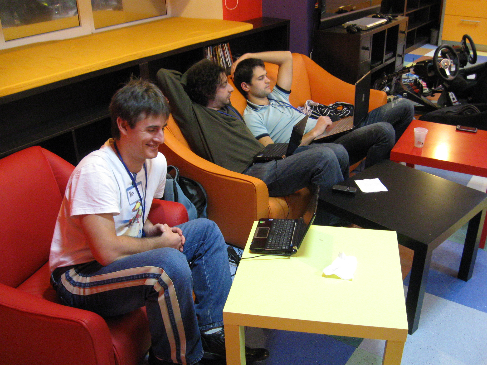
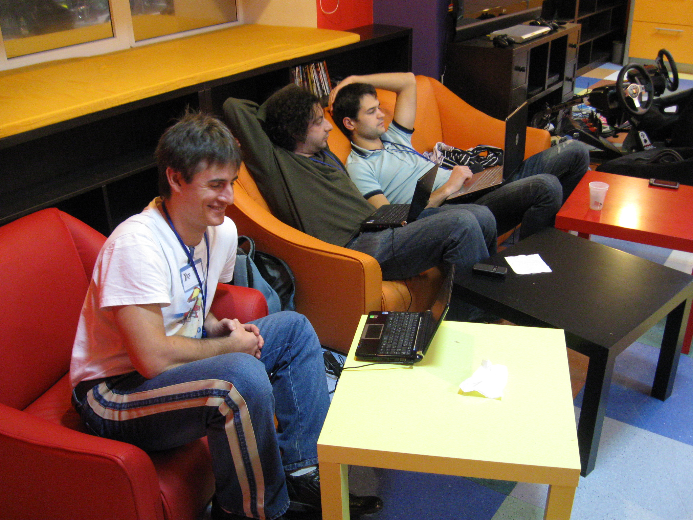

Предстоящие события
Последнее событие
О нас
Одесская группа пользователей Haskell (OdHUG) была основана в мае 2012 года.
Мы встречаемся примерно раз в месяц в неформальной обстановке и общаемся на любые темы, как-либо связанные с языком Haskell.
Время от времени мы также проводим встречи с докладами, лекции, хакатоны.
На наших встречах мы рады видеть как опытных хаскеллистов, так и людей, которые только собираются приступить к изучению этого интересного языка.
 
